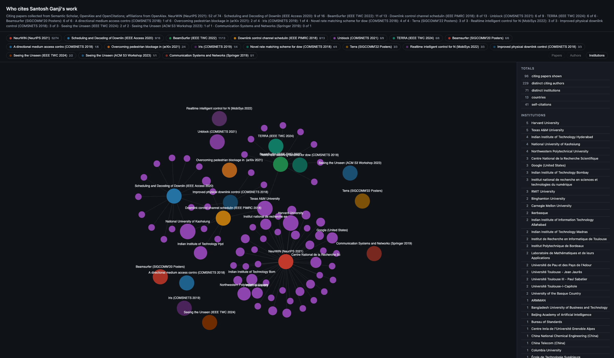
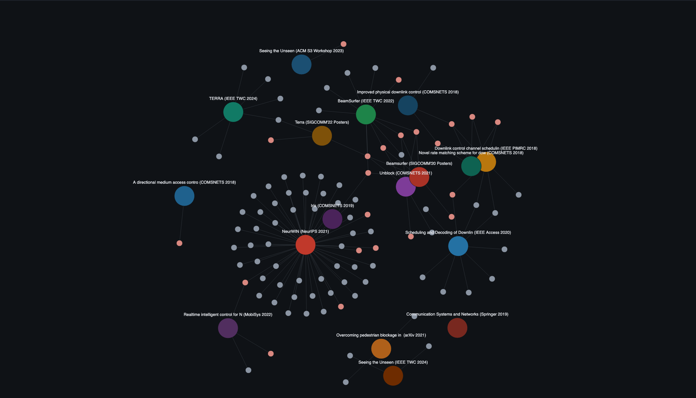
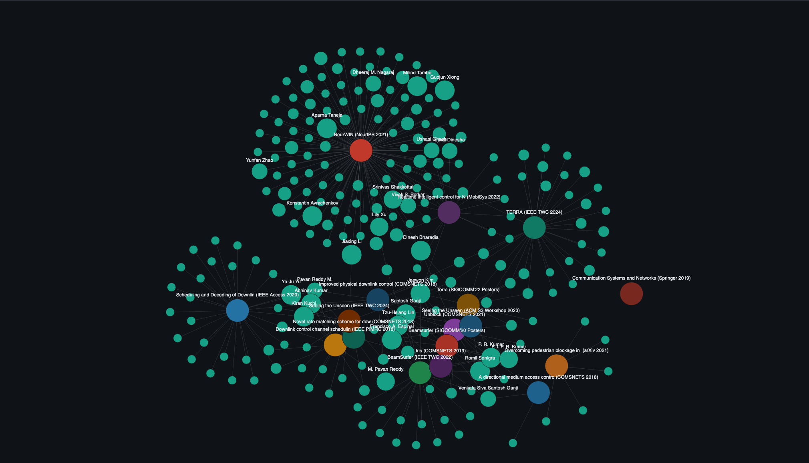
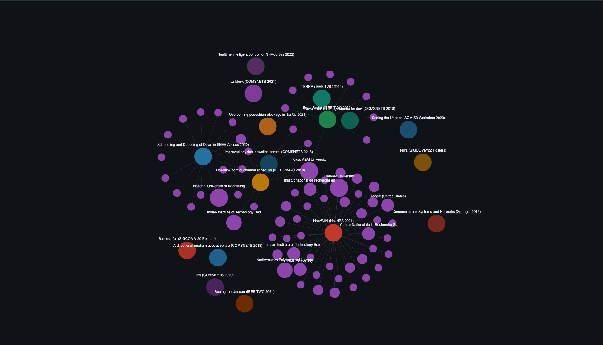
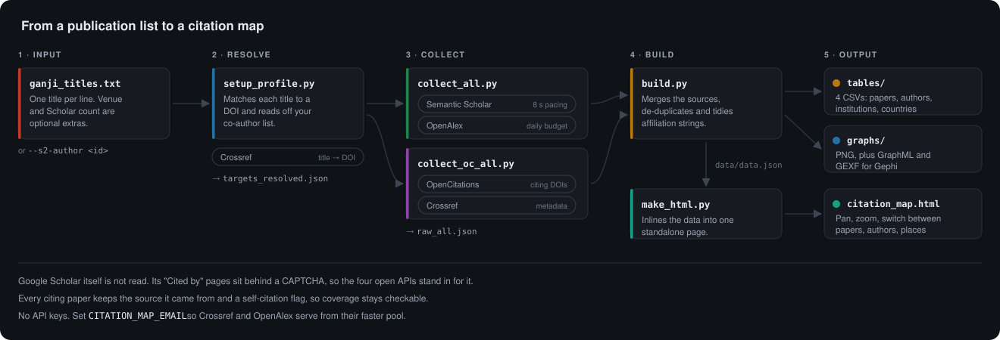

Google Scholar counts citations but will not let you read them. Its “Cited by” pages sit behind a CAPTCHA, so this reads four open bibliographic APIs instead and gives you the citing papers, the authors who wrote them, and the institutions behind those authors. Four CSVs, three graph formats, and one page that works offline.

This map is live. Drag to pan, scroll to zoom, click a chip to filter. Open it full screen Four most-cited papers only
One Google Scholar profile, 20 entries, collected in about ten minutes. The input file, the raw API responses and every output are committed under examples/ganji, so the numbers above can be checked.
Same records, regrouped. Node size grows with the number of your papers a node cites, so the people and places that keep coming back are the large ones.
citing paper self-citation citing author institution



Titles go in, DOIs come out of Crossref, four APIs return the citing records, and one build step turns them into tables, graphs and the page above.

No API keys are needed. Set a contact address and Crossref and OpenAlex serve you from their faster pool.
Copy the titles off your Scholar profile into a text file, one per line. A Semantic Scholar author id works instead, if you would rather not transcribe.
Collection runs at about twenty seconds per publication, because Semantic Scholar throttles callers without a key. A 20-paper profile takes roughly ten minutes.
Target resolution, rate limits and every script are covered in the guide.
git clone https://github.com/shotsan/scholar-citation-map.git pip install -r requirements.txt export CITATION_MAP_EMAIL=you@example.com mkdir -p ~/my-citations && cd ~/my-citations # one title per line python3 ~/scholar-citation-map/scripts/setup_profile.py --titles my_papers.txt python3 ~/scholar-citation-map/scripts/collect_all.py python3 ~/scholar-citation-map/scripts/collect_oc_all.py python3 ~/scholar-citation-map/scripts/build.py --raw raw_all.json \ --out-dir . --title "My publications" python3 ~/scholar-citation-map/scripts/make_html.py \ --data data/data.json --out citation_map.html
Coverage is reported per paper against Scholar's own count, so the shortfall is visible in the output rather than hidden.
Theses, workshop papers, unindexed preprints and non-English venues are thinly covered by these APIs. Older and smaller conferences suffer most. The example reached 118 rows against Scholar's 192.
None of the four APIs index them. Three patents account for 24 of the example's shortfall and cannot be recovered.
OpenAlex often stores no institution for IEEE conference records and arXiv preprints. Crossref stores a postal address instead of an organisation name, which the build reduces heuristically.
"M. Tambe" and "Milind Tambe" count as one person. Two different authors sharing a surname and first initial would be counted once.
{kind=link}
{kind=link}
{kind=link}